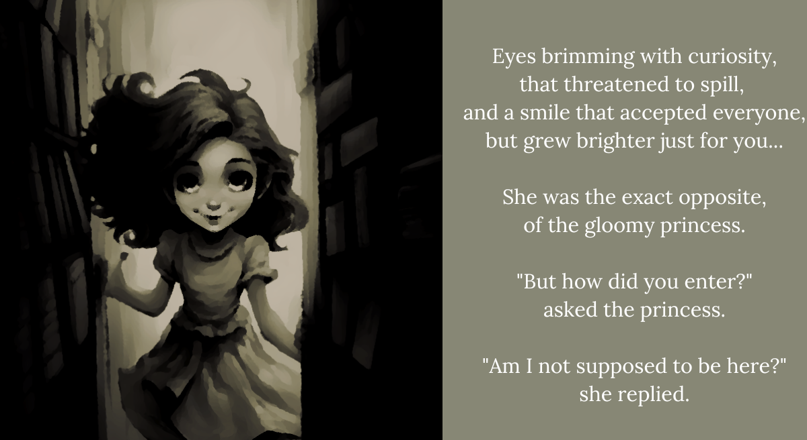

BBB2. She was lovely
“I came here because I wanted to read.
Isn’t that alright?”
"Well, obviously not!” said the princess,
though she couldn’t quite remember,
what made that so obvious.
Sad, but understanding.
She was that kind of good-natured girl.
“Then I don’t want to trouble you…
so I shall go. It was wonderful to meet you.”
But the princess grabbed her hand, and said:
“It’s fine, don’t go! I’m technically a princess.
They technically have to listen to me!
It’ll be okay,” she said, though she wasn’t certain.
“But um, if you see an adult, do please hide.”
The princess peered about the library,
even thought she knew no one came there.
That’s when the thought struck her strange,
“Why, you say you came here to read…
but all that’s here are old war books!” the princess cried out.
Now she was really suspicious!
“Oh, isn’t it great?”
But the girl did not flinch.
Her smile just got brighter.
“The real stories of those who fought…
for good, or for bad.
For freedom or for tyranny.
They’re both worth remembering,
don’t you think?”
The truth was, the princess did not think.
At least not about soldiers, very much.
Or the past. Or the people who died in it.
Certainly she didn’t think about the bad guys.
What was the big deal if they were forgotten?
But for the first time, the girl frowned.
“No one deserves to be forgotten, you know.
Even the worst of us.”
The princess just could not agree.
Yet it mattered not. Right in the princess’s hands,
was a book handed to her by her new friend.
“This one’s a sweeping epic…
and this one’s like a fairy tale!”
her new friend yelled excitedly,
with very poor volume control.
“Shush! They’ll hear you!
What war story could possibly resemble a fairy tale?”
And before the princess knew it, she was enamored.
By stories of soldiers who were saved,
by love letters in their breast pocket.
By long and complicated stories of nations,
spanning generations. Including her own family!
By the time it was dark,
the princess was quite sad.
“Will I ever see you again?” she asked.
“You’ll see me again, tomorrow!”
And for the first time, the princess’s tears,
were happy ones.